Passo a passo para incluir equipamentos, alterar dados e inativar registros na planilha online do Suporte V/Cert.
Para os gestores que acessam o Inventário com o perfil Equipe. As duas contas administradoras (Lays e Paula) têm acesso completo e cuidam da estrutura da planilha, das listas de opções, da liberação de acessos e das exclusões. Sempre que este guia disser "fale com as administradoras", é com elas.
O essencial para usar a planilha com segurança.
O Inventário de Equipamentos é uma planilha online. Tudo o que você inclui ou altera é salvo na hora, sem botão "Salvar arquivo", e aparece para todos em tempo real. Cada mudança fica registrada com o seu nome, a data e a hora.
| Ação | Gestor |
|---|---|
| Ver, pesquisar, filtrar, exportar CSV e imprimir a planilha | Pode |
| Incluir equipamentos (um por vez, em massa ou colando do Excel) | Pode |
| Alterar NOME DO USUÁRIO, ÁREA, GESTOR, STATUS, AUDITORIA, TÉCNICO QUE FEZ, DATA FEITA e OBSERVAÇÃO | Pode |
| Inativar um equipamento (STATUS = INATIVO) e reativá-lo | Pode |
| Solicitar a exclusão de um registro feito por engano | Pode |
| Alterar HOSTNAME, DNA e AR depois do cadastro | Só administradoras |
| Excluir um registro de vez, criar colunas ou incluir opções nas listas | Só administradoras |
| Coluna | O que preencher | Quem altera depois |
|---|---|---|
| HOSTNAME * | Nome da máquina na rede. Fica em maiúsculas e não pode se repetir. | 🔒 Só administradoras |
| DNA | Identificador da máquina no cadastro DNA. Não pode se repetir. | 🔒 Só administradoras |
| AR * | VCERT ou VCORP. | 🔒 Só administradoras |
| NOME DO USUÁRIO | Quem usa o equipamento (texto livre). | Gestores |
| ÁREA | Escolha na lista (SAC | SAP, VALIDAÇÃO, PRODUTOS, ANTIFRAUDE…). | Gestores |
| GESTOR | Escolha na lista de gestores. | Gestores |
| STATUS | ATIVO equipamento em uso · INATIVO fora de uso. | Gestores |
| AUDITORIA | PENDENTE REALIZADA FÉRIAS REMOVIDO | Gestores |
| TÉCNICO QUE FEZ | Técnico do Suporte N2 que fez o atendimento ou a auditoria. | Gestores |
| DATA FEITA | Data e hora do atendimento. O botão Agora preenche sozinho. | Gestores |
| OBSERVAÇÃO | Qualquer informação útil: motivo de inativação, troca de DNA, férias… | Gestores |
* Campo obrigatório. 🔒 O cadeado indica um campo que o gestor preenche só no cadastro. Depois disso, apenas a Lays ou a Paula podem corrigi-lo.
NOME DO USUÁRIO e GESTOR já são dados pessoais. Não registre CPF, RG, endereço, telefone pessoal nem dados de saúde, nem mesmo na OBSERVAÇÃO.
Não há senha: você entra com o seu e-mail corporativo e o seu nome.
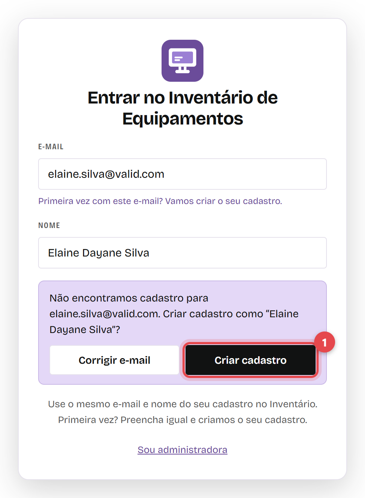
No computador em que você já entrou, aparece o botão "Continuar como…" com o seu nome, que entra com um clique.
O link "Sou administradora" é só para a Lays e a Paula. Depois de várias tentativas com o nome errado, a tela pede para esperar 1 minuto.
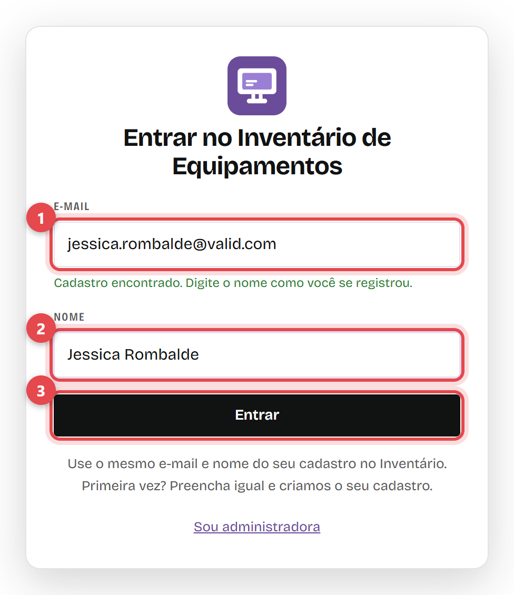
Onde fica cada coisa na planilha.
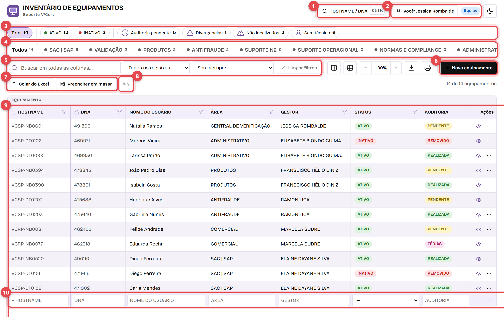
No resumo, "Divergências" conta os equipamentos com AUDITORIA FÉRIAS e "Não localizados" conta os com AUDITORIA REMOVIDO.
Quatro formas de incluir. Para o dia a dia, use o formulário.
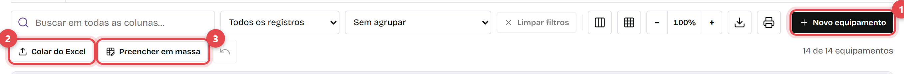
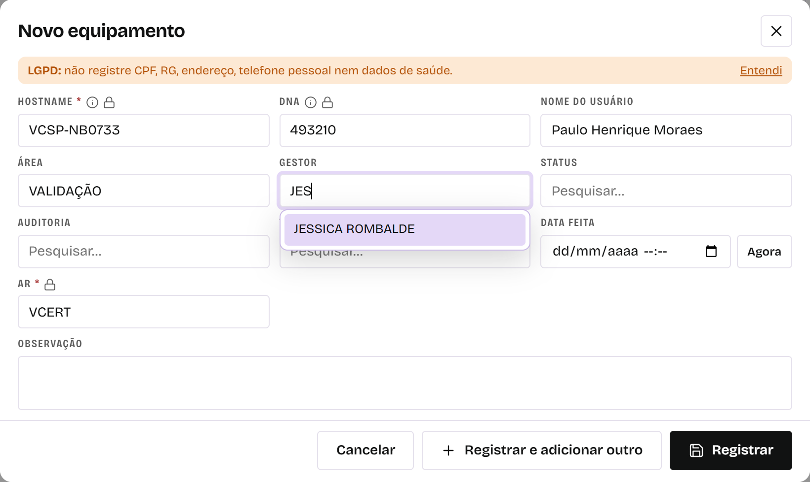
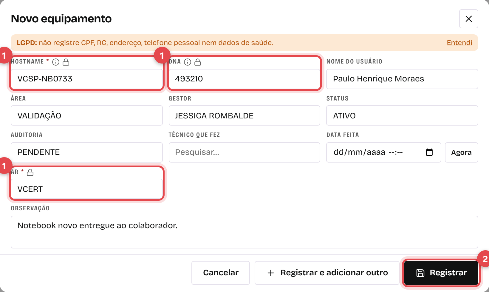
Use + Registrar e adicionar outro (Ctrl + Shift + Enter). A janela continua aberta e mantém área, gestor, status, auditoria, técnico, data e AR. Só HOSTNAME, DNA, usuário e observação ficam em branco.
O formulário também guarda um rascunho neste navegador: se a janela fechar sem querer, os dados voltam ao abrir de novo. As sugestões do seu último cadastro podem ser apagadas em "Limpar sugestões".
Se o HOSTNAME ou o DNA já existir em outra linha, aparece o aviso "Já usado por…" logo abaixo do campo, e o equipamento não é registrado.
Clique em Abrir para ver o equipamento que já usa esse valor. Talvez ele só precise ser atualizado, e não cadastrado de novo.
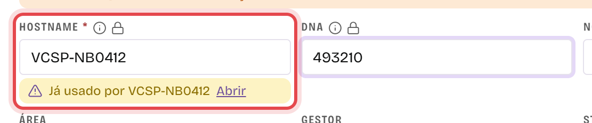
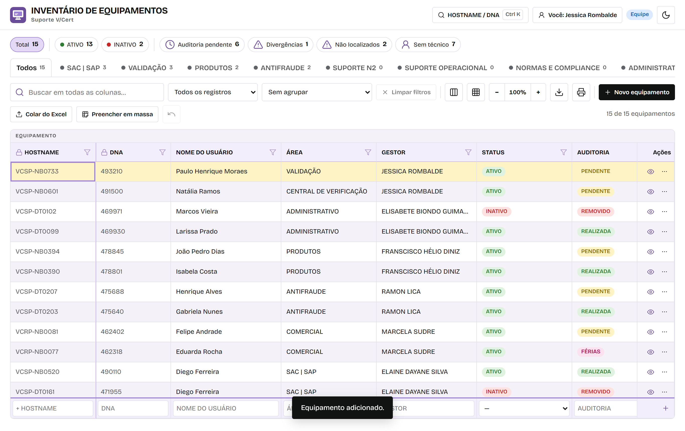
A última linha da grade, com os textos "+ HOSTNAME", "DNA"…, serve para incluir um equipamento sem abrir janela. Preencha os campos (use Tab para passar ao próximo), role para a direita para preencher o AR, que é obrigatório, e tecle Enter ou clique no + no fim da linha.
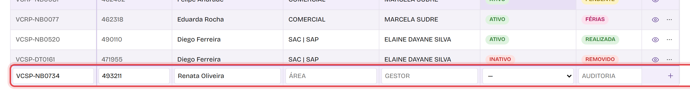
Abre uma grade de rascunho, como no Excel, com uma linha por equipamento.
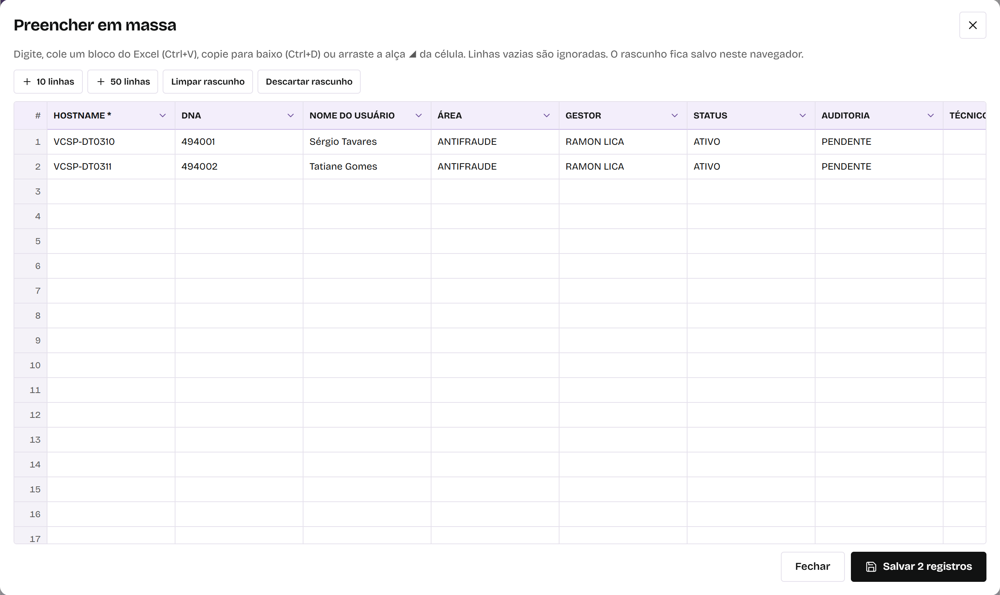
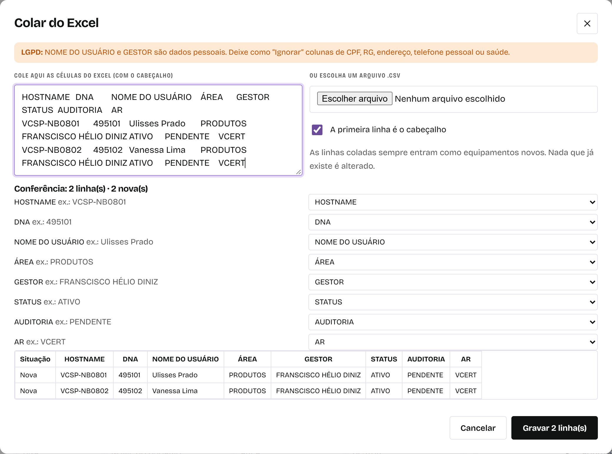
Para os gestores, o "Colar do Excel" só inclui linhas novas e nunca altera um equipamento que já existe. Valores de lista que não batem (por exemplo, um gestor escrito errado) aparecem marcados para você corrigir antes de gravar.
Duas formas: direto na célula ou pela ficha do equipamento.
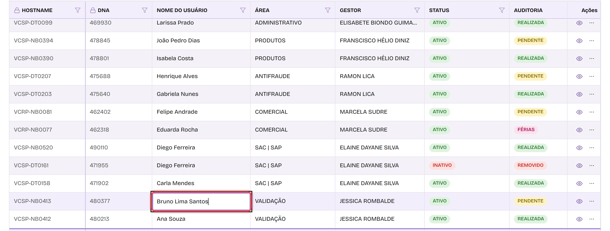
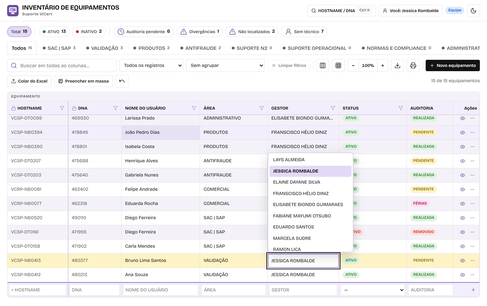
Com uma célula selecionada, as setas do teclado andam pela grade, Enter ou F2 abrem a edição e Delete apaga o conteúdo (menos em campos obrigatórios). Errou? Use Desfazer (Ctrl + Z).
A ficha mostra todos os campos de uma vez, além do histórico. É a melhor opção para mudar vários campos juntos.
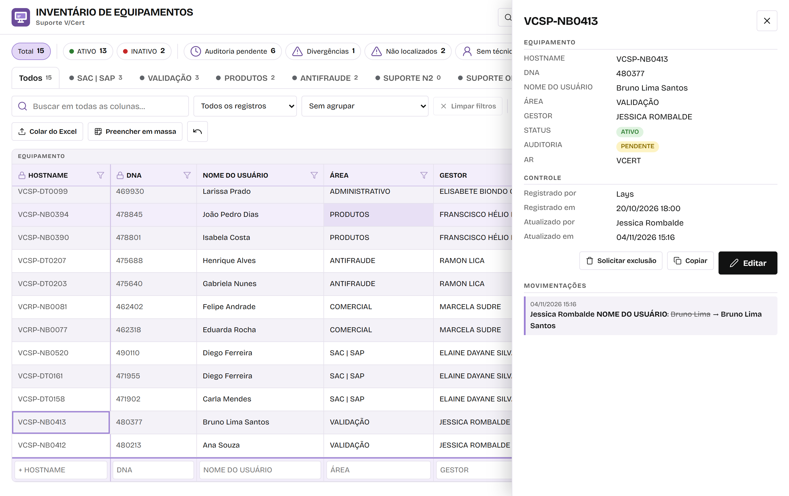
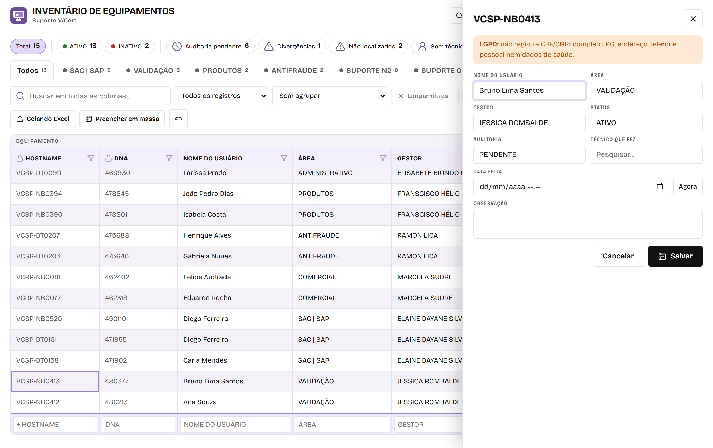
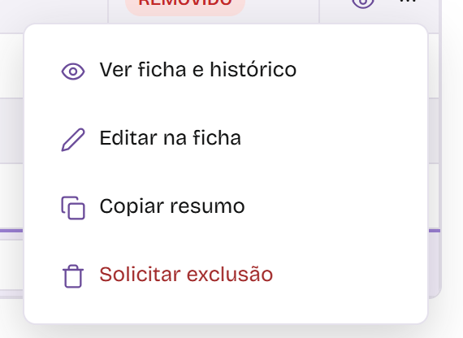
O menu ⋯ também tem "Copiar resumo", que copia todos os dados do equipamento em texto para colar num chamado ou e-mail.
HOSTNAME, DNA e AR têm um cadeado no título da coluna. O gestor preenche esses campos só ao cadastrar o equipamento.
Se você tentar alterar um deles, aparece o aviso: "HOSTNAME não muda depois do cadastro. Para corrigir, fale com a Lays ou a Paula."
Nesse caso, envie às administradoras o HOSTNAME atual e o valor correto.
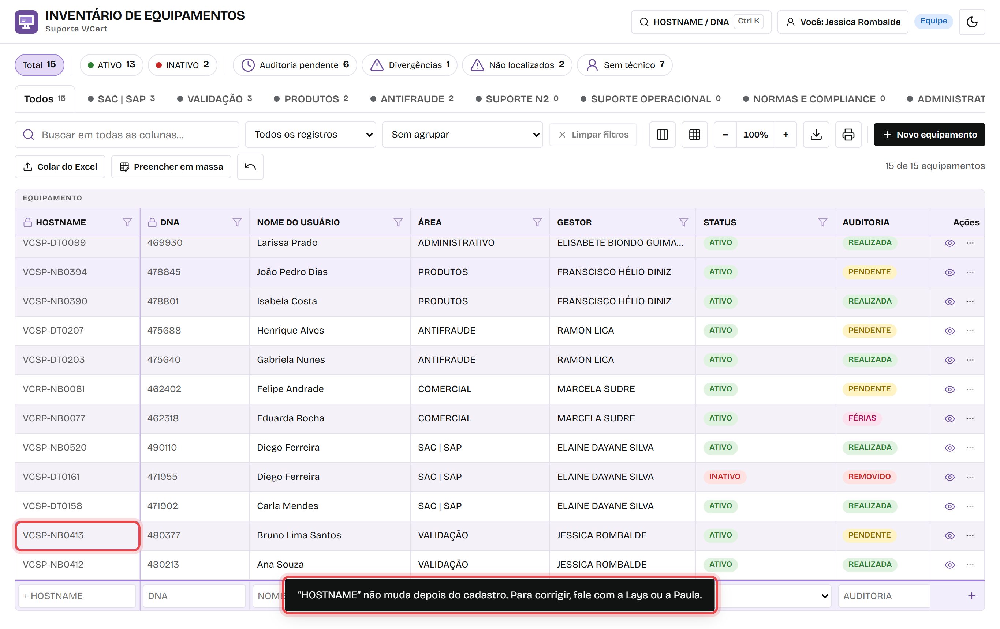
Cada alteração entra na seção Movimentações da ficha, com quem alterou, quando, o valor antes e o valor depois. Trocas de usuário, área, gestor, status, técnico e auditoria aparecem em destaque. Nada se perde: se alguém mudar algo por engano, dá para ver o valor anterior e voltar.
Se uma opção for retirada de uma lista pelas administradoras, os equipamentos que já a usam continuam mostrando o nome, com um pequeno marcador. Essa opção só não aparece mais para novas escolhas. Se o gestor ou a área que você precisa não estiver na lista, peça às administradoras para incluir.
Inativar é mudar o STATUS para INATIVO. O equipamento continua na planilha, com todo o histórico.
Quando um equipamento sai de uso (colaborador desligado, máquina devolvida, formatada, substituída ou recolhida), inative o registro. A linha continua na planilha para consulta, auditoria e histórico. A exclusão é só para cadastros feitos por engano (veja o item 6.5).
Modelo de observação:
Exemplo: INATIVADO em 04/11/2026 – colaborador desligado – notebook devolvido ao TI – chamado GLPI 18452.
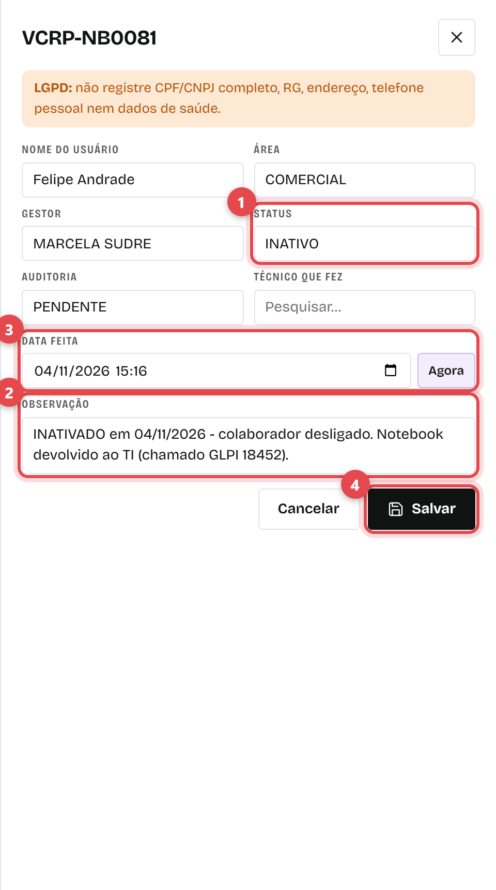
O STATUS passa a mostrar INATIVO na grade e na ficha. Em Movimentações fica registrado "STATUS: ATIVO → INATIVO", com o seu nome, a data e a hora, junto com a observação e a data preenchidas.
Reativar: se o equipamento voltar a ser usado, faça o mesmo caminho e escolha ATIVO. Atualize a OBSERVAÇÃO com o motivo da reativação.
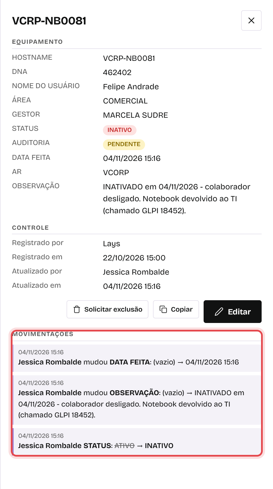
Clique na célula STATUS da linha, escolha INATIVO e tecle Enter. Depois, clique na célula OBSERVAÇÃO da mesma linha (role a grade para a direita) e registre o motivo.
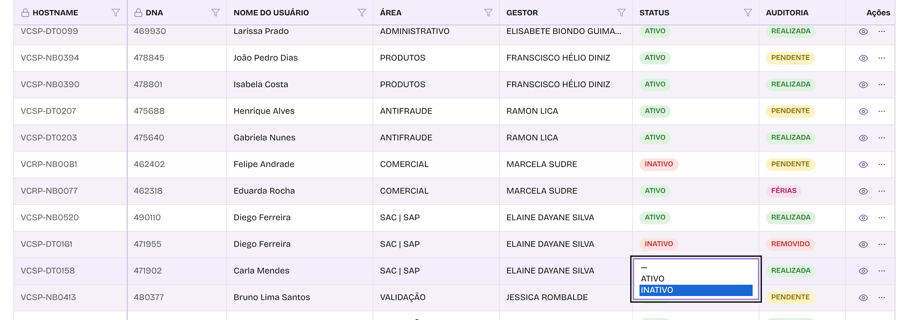
No resumo do topo, clique em INATIVO para ver só os inativos. Clique de novo para voltar a ver todos. O filtro STATUS no título da coluna faz o mesmo.
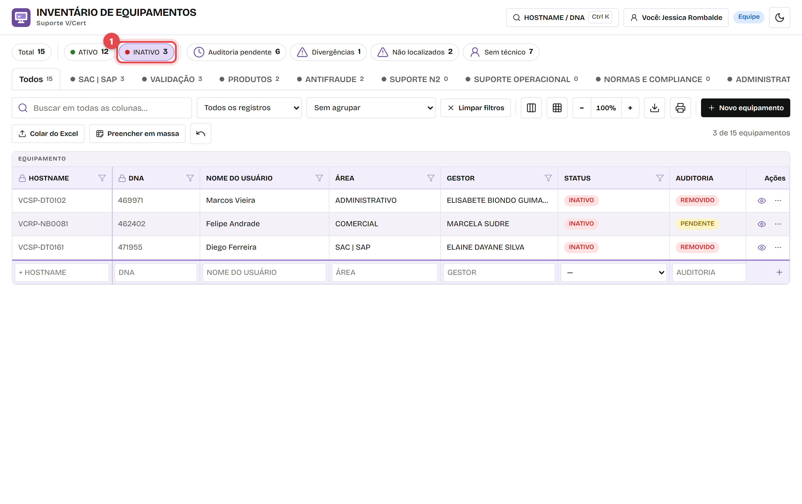
Pela regra do processo de auditoria, quando a máquina é formatada o DNA anterior é inativado e o novo é cadastrado, sem apagar os dados antigos. Trocar o nome da máquina também exige um DNA novo.
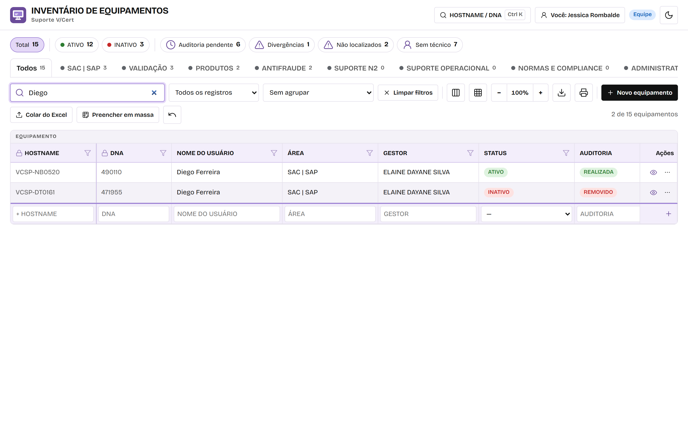
HOSTNAME e DNA não se repetem em nenhuma linha, nem nas inativas. Se a máquina formatada continuar com o mesmo HOSTNAME, o formulário vai avisar "Já usado por…". Nesse caso, inative a linha antiga e peça à Lays ou à Paula para registrar o DNA novo.
Para equipamentos reais que saíram de uso: devolução, desligamento, formatação, substituição ou recolhimento.
O gestor faz sozinho. A linha e o histórico ficam na planilha.
Só para registros feitos por engano: cadastro duplicado, teste ou equipamento que não existe.
O gestor pede e uma administradora aprova ou recusa.
A linha fica marcada com Exclusão solicitada até a Lays ou a Paula decidirem. Se for aprovada, a linha vai para a Lixeira delas, de onde ainda pode ser restaurada.
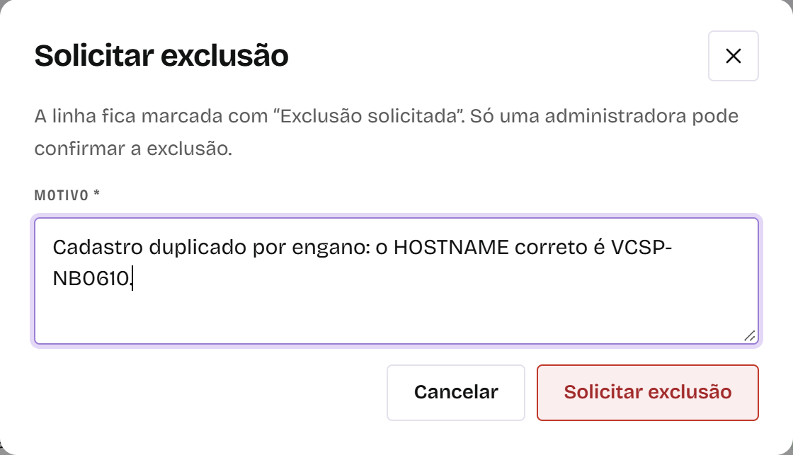
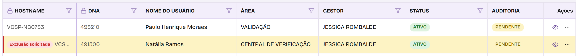
Recursos que agilizam o dia a dia.
Clique em HOSTNAME / DNA no topo ou tecle Ctrl + K. Digite o HOSTNAME ou o DNA: com o valor exato, Enter abre a ficha direto. É o caminho mais rápido para conferir uma máquina durante um atendimento.
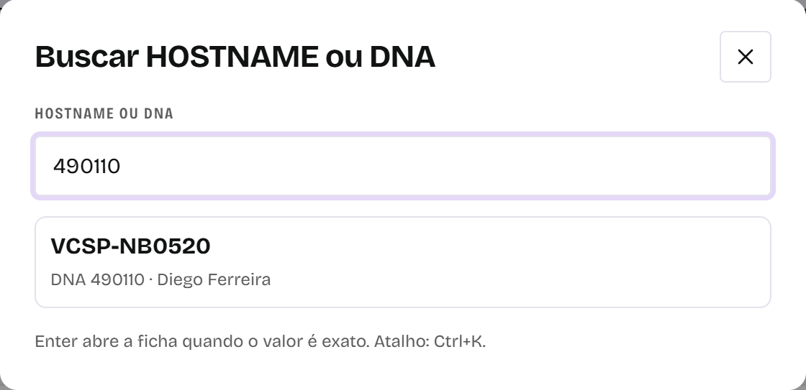
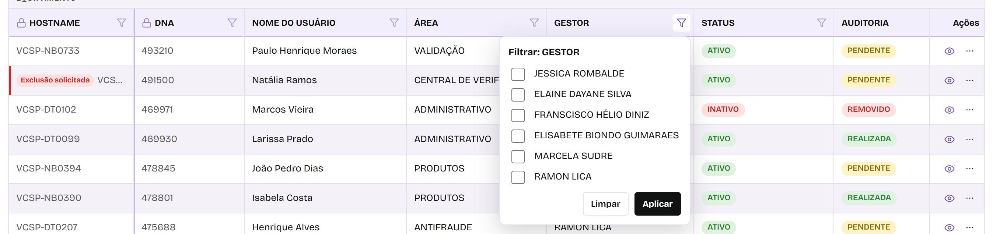
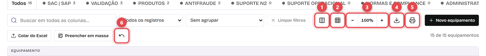
| Nº | Ferramenta | Para que serve |
|---|---|---|
| 1 | Colunas | Mostra ou esconde colunas. Vale só para você e não muda a planilha dos outros. |
| 2 | Densidade compacta | Deixa as linhas mais baixas para ver mais equipamentos por tela. |
| 3 | Tamanho (− 100% +) | Aumenta ou diminui só a planilha. |
| 4 | Exportar CSV | Baixa as linhas filtradas, que abrem no Excel. Filtre antes para exportar só o que precisa. |
| 5 | Imprimir | Imprime a visão atual. |
| 6 | Desfazer | Desfaz a sua última alteração (Ctrl + Z). Não desfaz um cadastro novo: para isso, use "Solicitar exclusão". |
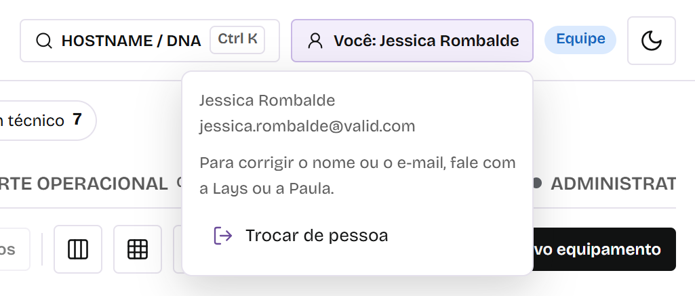
Para consultar rápido.
| Tecla | O que faz |
|---|---|
| Ctrl + K | Busca rápida por HOSTNAME ou DNA |
| Ctrl + Enter | Registrar, no formulário "Novo equipamento" |
| Ctrl + Shift + Enter | Registrar e adicionar outro |
| Clique, Enter ou F2 | Editar a célula selecionada |
| Enter / Tab (editando) | Salva e vai para a célula de baixo ou para a da direita |
| Esc | Cancela a edição ou fecha a janela ou a ficha |
| Setas, Home, End | Andar pela grade |
| Delete | Apagar o conteúdo da célula (menos em campo obrigatório) |
| Ctrl + Z | Desfazer a última alteração |
| Ctrl + V sobre a grade | Colar um bloco do Excel (abre a conferência do "Colar do Excel") |
Guia rápido da plataforma de chamados: registrar, acompanhar e responder.
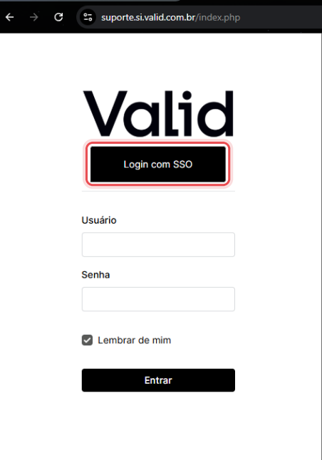
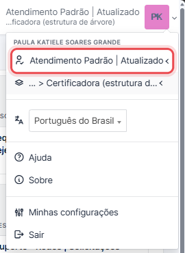
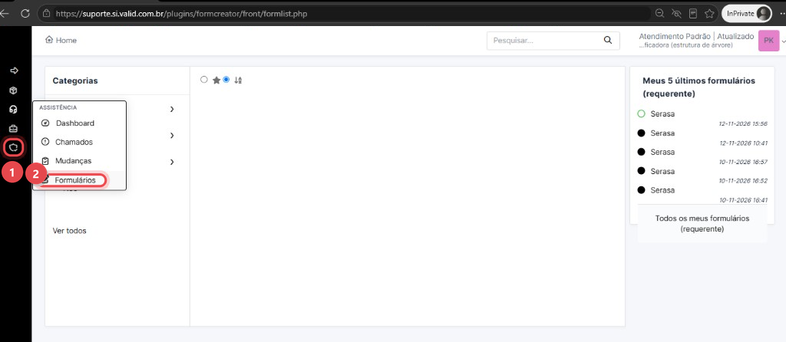
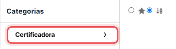
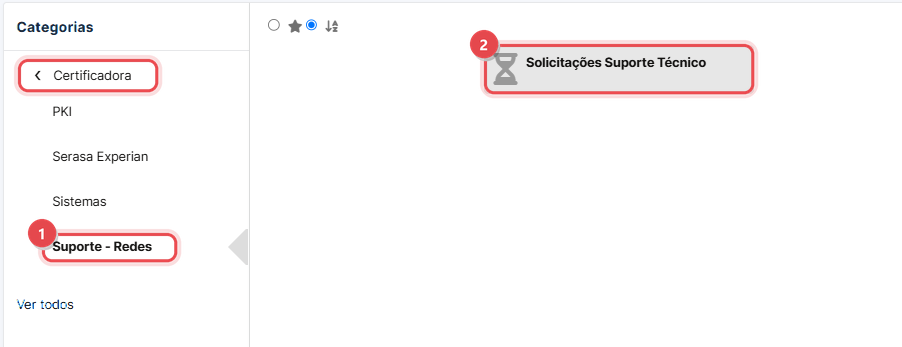
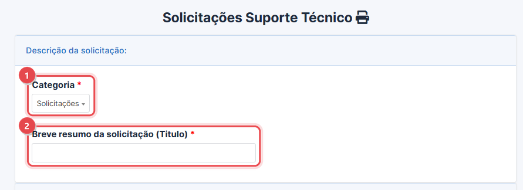
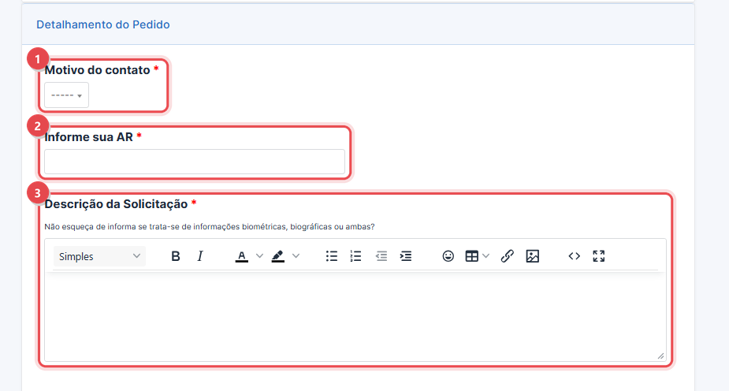
Informe se o pedido trata de informações biométricas, biográficas ou ambas. Inclua também o número de ticket, a mensagem de erro, a etapa do processo e as demais evidências relevantes. Se o chamado for sobre um equipamento, use "Copiar resumo" no menu ⋯ da linha do Inventário (item 5.2) e cole os dados na descrição.
Pronto, chamado registrado com sucesso! O acompanhamento é feito pelo seu perfil na plataforma, na seção "Chamado" (1). Lá aparecem os dados do formulário enviado (2), e o aviso de confirmação mostra o número do chamado (3).
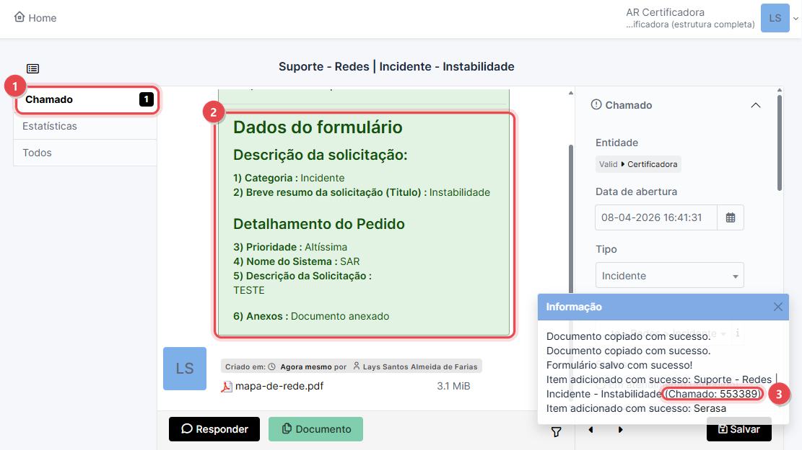
Use os botões Responder e Documento para interagir no chamado e para anexar evidências, quando necessário.
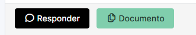
Dúvidas ou sugestões sobre o Inventário de Equipamentos: Lays e Paula · Suporte V/Cert